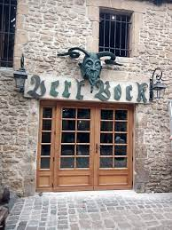
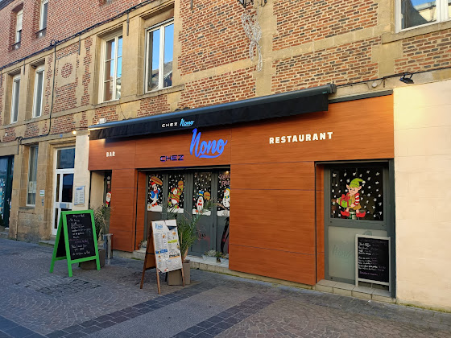
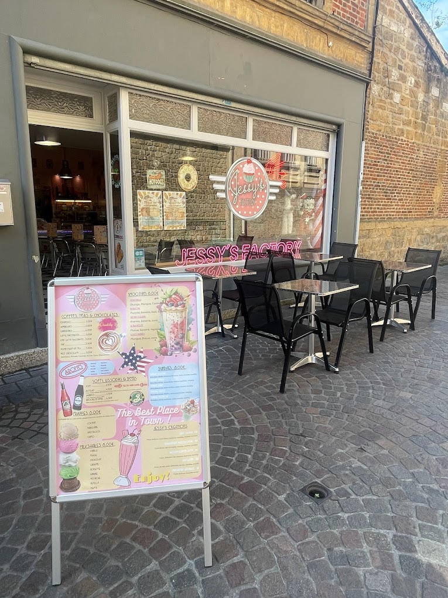

<!DOCTYPE html>
<html lang="en">

<head>
    <base target="_top">
    <meta charset="utf-8">
    <meta name="viewport" content="width=device-width, initial-scale=1">

    <title>Map</title>
    <script src="https://cdn.tailwindcss.com"></script>
    <link rel="shortcut icon" type="image/x-icon" href="docs/images/favicon.ico" />

    <link rel="stylesheet" href="https://unpkg.com/leaflet@1.9.4/dist/leaflet.css" integrity="sha256-p4NxAoJBhIIN+hmNHrzRCf9tD/miZyoHS5obTRR9BMY=" crossorigin="" />
    <script src="https://unpkg.com/leaflet@1.9.4/dist/leaflet.js" integrity="sha256-20nQCchB9co0qIjJZRGuk2/Z9VM+kNiyxNV1lvTlZBo=" crossorigin=""></script>
    <style>
        .leaflet-popup-content-wrapper{
            width: 200px;
        }
    </style>

</head>

<body>

    <div class="">
        <div id="map" class="m-5 h-[700px]"></div>
    </div>
    <script>

        const map = L.map('map').setView([49.772491, 4.718851], 18);

        const tiles = L.tileLayer('https://tile.openstreetmap.org/{z}/{x}/{y}.png', {
            maxZoom: 19,
        }).addTo(map);

        const popup = L.popup();

        function onMapClick(e) {
            popup
                .setLatLng(e.latlng)
                .setContent(`Votre ${e.latlng.toString()}`)
                .openOn(map);
        }

        const userIcon = L.icon({
            iconUrl: '../assets/img/my-icon.webp',
            iconSize: [27, 40],
            iconAnchor: [16, 32],
        });

        const markersData = [
            {
                lat: 49.772491,
                lon: 4.718851,
                name: 'Vert Bock',
                popupContent: '<b>Vert Bock</b><div class="mt-3 h-32 overflow-hidden flex items-center justify-center rounded-lg"></div><div class="mt-2"><span class="font-semibold">Adresse :</span>17 Rue Irénée Carré, 08000 Charleville-Mézières</div><div class="mt-2"><div data-selected=true class="text-xs bg-white flex items-center w-fit py-1 px-3 mt-2 leading-none rounded-xl data-[selected=true]:bg-[#004a93] data-[selected=true]:text-white data-[not_active]:bg-[#dc2f34] data-[selected=true]:text-white transition-all duration-200 cursor-pointer">Bar</div></div>',
            },
            {
                lat: 49.740405,
                lon: 4.724062,
                name: 'Promo Cash',
                popupContent: '<b>Promo Cash</b><br/>I am a popup.',
            },
            {
                lat: 49.772692,
                lon: 4.718926,
                name: 'Chez Nono',
                popupContent: '<b>Chez Nono</b><div class="mt-3 h-32 overflow-hidden flex items-center justify-center rounded-lg"></div><div class="mt-2"><span class="font-semibold">Adresse :</span>17 Rue Irénée Carré, 08000 Charleville-Mézières</div><div class="mt-2"><div data-selected=true class="text-xs bg-white flex items-center w-fit py-1 px-3 mt-2 leading-none rounded-xl data-[selected=true]:bg-[#004a93] data-[selected=true]:text-white data-[not_active]:bg-[#dc2f34] data-[selected=true]:text-white transition-all duration-200 cursor-pointer">Restaurant</div></div>',
            },
            {
                lat: 49.772742,
                lon: 4.718698,
                name: 'Jessy\'s Factory',
                popupContent: '<b>Jessy\'s Factory</b><div class="mt-3 h-32 overflow-hidden flex items-center justify-center rounded-lg"></div><div class="mt-2"><span class="font-semibold">Adresse :</span>19 Rue Irenée Carré, 08000 Charleville-Mézières</div><div class="mt-2"><div data-selected=true class="text-xs bg-white flex items-center w-fit py-1 px-3 mt-2 leading-none rounded-xl data-[selected=true]:bg-[#004a93] data-[selected=true]:text-white data-[not_active]:bg-[#dc2f34] data-[selected=true]:text-white transition-all duration-200 cursor-pointer">Coffee Shop</div></div>',
            },
        ];


        markersData.forEach(markerInfo => {
            const { lat, lon, name, popupContent } = markerInfo;

            const marker = L.marker([lat, lon]).addTo(map).bindPopup(popupContent);

        });

        map.on('click', onMapClick);

        const userMarker = L.marker([0, 0], { icon: userIcon }).addTo(map);

        function updateLocation(position) {
            const { latitude, longitude } = position.coords;

            userMarker.setLatLng([latitude, longitude]);

            map.setView([latitude, longitude], map.getZoom());
        }

        navigator.geolocation.watchPosition(updateLocation);

    </script>

</body>

</html>